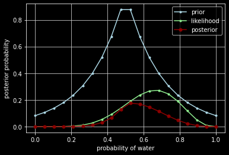
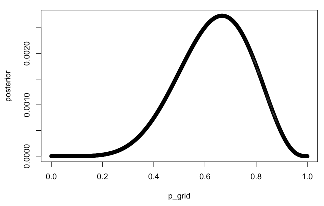
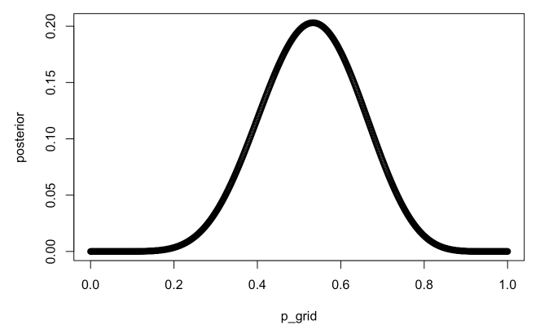

all articles
Connecting Distributions
A guided tour of a tightly connected family
This article builds both a high-level conceptual map and a low-level algebraic understanding of how the following distributions are not isolated objects, but different faces of a small number of underlying stochastic mechanisms:
- Poisson (counts in time or space)
- Exponential (inter-arrival times)
- Gamma (waiting time for multiple events; conjugate to Poisson)
- Chi-squared (special case of Gamma)
- Beta (normalized ratio of Gammas; probability on ([0,1]))
- Beta-prime and F (ratios and scaled ratios of Gammas)
- Binomial (fixed-(n) Bernoulli trials)
- Multinomial (categorical counts)
- Dirichlet (multivariate generalization of Beta)
The unifying idea is simple but powerful:
Read more…Estimators and the Delta Method
Why Estimators Deserve Your Attention
In statistics and machine learning, we almost never observe the quantity we truly care about.
Instead, we estimate it.
Whether it’s a population mean, a regression coefficient, a risk metric, or a model performance score, the object of interest is typically an unknown parameter $\theta$. An estimator is a rule—usually a function of data—that produces an approximation of this unknown quantity.
This article focuses on one of the most powerful tools for studying estimators:
Read more…(Un)biased Point Estimation
Problem Setup
Suppose that $X$ has a uniform distribution on the interval $[0, \theta]$, where $\theta$ is unknown and $X$ could be reaction time to a stimulus or volumes of rocks, for example.1
Likelihood Function
The probability density function (PDF) of a single observation $X_i$ from a uniform distribution on $[0, \theta]$: $$ f(x_i; \theta) = \begin{cases} \frac{1}{\theta} & \text{if } 0 \leq x_i \leq \theta \\ 0 & \text{otherwise} \end{cases} $$ Given that the sample is independent and identically distributed (i.i.d.), the joint likelihood function for the entire sample is the product of the individual PDFs:
Read more…Modified Coupon Collector's Problem
Introduction
In probability theory, the coupon collector’s problem refers to the mathematical analysis of collecting every distinct kind of element when randomly choosing elements with replacement. Two initial questions can be asked for this problem: (1) If there are $k$ different kinds of coupons, what is the probability that all $k$ kinds of coupons have been collected after $n$ coupons are collected with replacement? (2) Given $k$ kinds of coupons, how many coupons do you expect you need to draw with replacement before having drawn each coupon at least once?
Read more…Statistical Rethinking (Ch. 2)
Code 2.3
import numpy as np
import scipy.stats as stats
import matplotlib.pyplot as plt
import pymc3 as pm
import arviz as az
plt.style.use('dark_background')
RANDOM_SEED = 8927
np.random.seed(RANDOM_SEED)
# az.style.use("arviz-darkgrid")
p_grid = np.linspace(0, 1, num=20)
prior = np.ones(20) # :: uniform
prior = [0 if p < 0.5 else 1 for p in p_grid] # :: step
prior = [np.exp(-5*np.abs(p - 0.5)) for p in p_grid] # :: exp
likelihood = stats.binom.pmf(6, 9, p_grid)
unstd_posterior = likelihood * prior
posterior = unstd_posterior / np.sum(unstd_posterior)
fig, ax = plt.subplots(1, 1)
ax.plot(p_grid, prior, color='lightblue', marker='.', label='prior')
ax.plot(p_grid, likelihood, color='lightgreen', marker='.', label='likelihood')
ax.plot(p_grid, posterior, color='darkred', marker='.', markersize=10, label='posterior')
ax.set_xlabel('probability of water')
ax.set_ylabel('posterior probability')
ax.legend()
ax.grid(True, color='lightgray')
plt.show()

Read more…Statistical Rethinking (Ch. 3)
{r setup, include=FALSE}
knitr::opts_chunk$set(echo = TRUE)
library(rethinking)
Preliminary Code
p_grid <- seq(from=0, to=1, length.out=1000)
prior <- rep(1, 1000)
likelihood <- dbinom(6, size=9, prob=p_grid)
posterior <- likelihood * prior
posterior <- posterior / sum(posterior)
plot(p_grid, posterior)

samples <- sample(p_grid, prob=posterior, size=1e4, replace=TRUE)
3E1.
sum(samples < 0.2) / length(samples)
## [1] 5e-04
3E2.
sum(samples > 0.8) / length(samples)
## [1] 0.1181
3E4.
quantile(samples, 0.2)
## 20%
## 0.5155155
3E5.
quantile(samples, 0.8)
## 80%
## 0.7597598
3E6.
HPDI(samples, prob=0.66)
## |0.66 0.66|
## 0.5095095 0.7807808
3E7.
PI(samples, prob=0.66)
## 17% 83%
## 0.4984985 0.7737738
3M1.
p_grid <- seq(from=0, to=1, length.out=1e3)
prior <- rep(1, length(p_grid))
likelihood <- dbinom(8, 15, prob=p_grid)
posterior <- likelihood * prior
plot(p_grid, posterior)

Read more…P Value
What is a P-Value?
An average person might say p-values are of utmost importance in a student’s statistical toolbox. However, while teaching statistics and probability, I have noticed its subtle definition and conceptual underpinnings being grossly under-emphasized. This note may help clarify what a p-value is and how we use it to make decisions.
To explain what a p-value is, I will start with the “p”. What does it stand for? If you’re thinking probability, then you’re correct. The tricky question becomes: the probability of what? One definition might be: a p-value is the probability of getting an observed value of the test statistic (or more extreme value), given that the null hypothesis is true. Sounds confusing, I know. Variants of this definition are also used but generally this language doesn’t help if you’re actually trying to learn it. Let’s break this topic down with the use of a story.
Read more…Linear Regression
Mathematical Foundations
The linear model is often the first model we learn fitting data. Given a vector of inputs $X^T = (X_1, X_2, \ldots, X_p)$, we can predict the output $Y$ with the following model:
$$\hat Y = \hat \beta_0 + \sum_{j=1}^p X_j \hat \beta_j$$
Many times, it’s convenient to include the vector $\textbf{1}$ in $\textbf{X}$ and include the $\hat \beta_0$ in the vector $\hat \beta$ so we may represent this linear model in vector form as an inner product:
Read more…